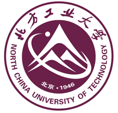
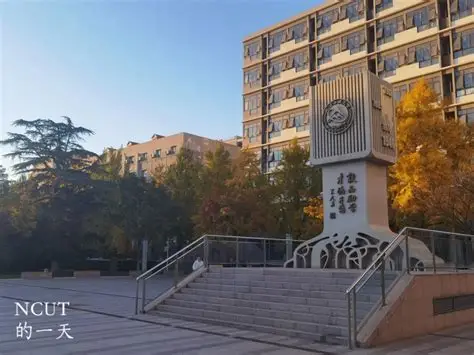

NCUT

北方工业大学（North China University of Technology, NCUT），简称 “北方工大”，是北京市属重点公办高校，以工科见长，非 985、非 211，但博士授权单位、保研资格校、卓越工程师计划高校。

一、基本信息
- 全称：北方工业大学（North China University of Technology）
- 简称：北方工大/NCUT
- 地址：北京市石景山区晋元庄路 5 号（近地铁 1 号线八角游乐园站）
- 性质：公办全日制普通本科高校，北京市属
- 校训：敦品励学，才德并懋
- 校风：严肃、严格、严谨
二、历史沿革（1946— 至今）
- 1946 年：创立，前身 国立北平高级工业职业学校（北平）
- 1950s：先后更名 北京重工业学校、北京钢铁工业学校
- 1978 年：升格为 北京冶金机电学院（本科）
- 1985 年：正式定名 北方工业大学
- 2024 年：获批 博士学位授予单位（2 个一级博士点）
- 2026 年：建校 80 周年
一句话：1946 年建校，老牌工科，原冶金部直属，现北京市属重点。
三、办学规模（2025）
- 校园：占地 452 亩，建筑面积 40 万㎡
- 在校生：约 1.69 万人
- 教职工：1265 人，专任教师 1005 人
- 学院：15 个二级学院
- 本科专业：39 个（覆盖工、理、文、经、管、法、艺）
四、学位与学科实力
学位层次
- 博士：2 个一级博士点（控制科学与工程、机械工程）+ 1 个服务国家特殊需求博士项目
- 硕士：18 个一级硕士点 + 10 个专业学位类别
- 本科：39 个专业，13 个国家级一流本科专业，20 个市级一流专业
学科评估
- 控制科学与工程：B（北京市高精尖学科）
- 计算机科学与技术：B-
- 机械工程：C+
- 土木工程：C+
- 电气工程、软件工程：C
ESI与重点学科
- 工程学：进入 ESI 全球前 1%
- 电力电子工程：全球前 400，市属高校第一
- 特色方向：智能控制、智能制造、智慧城市、储能、无人机、AI、集成电路
五、王牌专业（就业强、分数高）
- 电气与自动化类：自动化、电气工程及其自动化（最强）
- 计算机与电子信息类：计算机科学与技术、软件工程、电子信息工程
- 机械与能源类：机械设计制造及其自动化、能源与动力工程
- 土木与建筑类：土木工程、建筑学
- 经管文法类：会计学、法学、英语（市一流）
六、升学与就业
升学
- 保研率：约 15%–20%（实验班可达 30%）
- 考研：本校 + 外校（北理工、北航、中科院等）
- 留学：伦敦布鲁内尔学院（中英合作）、一带一路留学生基地
就业
- 地域：北京为主（70%+），京津冀、长三角
- 行业：国企、央企、互联网、智能制造、电力、建筑
- 薪资：工科平均 8k–12k / 月，计算机 / 电子信息更高
- 口碑：北京工科保底强校、就业稳、学风实
七、校园与生活
- 位置：北京石景山区，地铁 1 号线直达，远离市中心喧嚣
- 环境：绿化好、安静，“北京高校十佳美丽校园”
- 设施：艺术馆（1986 年，理工科高校首家）、图书馆、体育馆、实验室齐全
- 氛围：工科氛围浓、学习风气好、竞争压力适中